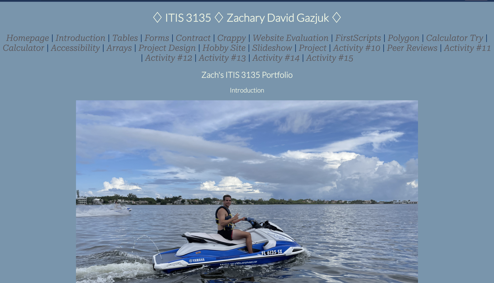

Xavier Collins | Xenoistic Cat| ITIS 3135
Peer Review 1
- While looking at the site, the site has a good organization from the text, layers, footer, and header.
- The image in the middle is very much centered, which makes it visable to see the your face.
- The contrast of the site on all pages is well fited for the design features.
- The main thing I liked on the site was the hobby site. Did a good job using the scripts and AJAX.
- Also, one thing that may need to be looked over is yur slideshow. Maybe check the javascript functions
- Overall, pretty good site.
Peer Review 2

- Looking at the site, very nice picture in the middle. Was something that got my attention
- The header colors were white which gave a good standout feature towards your site background. It didn't give me any eye strains.
- The project page contained nice slideshows and different features. Gave a good amount of information for someone who likes any type of armed forces.
- The formatting of the entire site looks good and is very much centered within the site. Nothing is going outside or drifted off.
- I also like the hobby site as well. One thing I would've changed is the color of the font. Would've changed it to a lighter color.
- Overall this a good site.